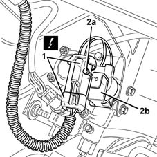

1043B46 pressure regulator stop solenoid coil r r
- Path
- Procedures > 10 ENGINE UNIT > 1043 LGP TANK AND PIPES > 1043B gpl fuel circuit pipes > 1043B46 pressure regulator stop solenoid coil r r
- Kind
- repair procedure (removal / refitting; the operation number is the code)
- Applies to
- engines: 1.6 16v; all production periods; only with equipment: GPOWER
- Interactive page
- https://sloeber94.github.io/elrnDB-fMltpl/en/#/2891508
Applies to: engines: 1.6 16v; all production periods; only with equipment: GPOWER and Euro 3
 Removing
Removing
 Refitting
RefittingDisconnect the battery negative terminal.
1. Disconnect the stop solenoid coil electrical connector.
 | Name | Connector |
|---|---|---|
1 | GPL cut out solenoid valve |
2. Undo bolt (2a) and remove coil (2b).

Applies to: engines: 1.6 16v; all production periods; only with equipment: GPOWER and Euro 3
Refitting
RemovingFit the coil and fix it using the bolt.
Connect the electrical connector.
| Name | Connector |
|---|---|---|
- | GPL cut out solenoid valve |
Connect the battery negative terminal.